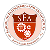

School of Engineering and Architecture
The College of Engineering was established on July 23, 1963 starting with one-year general engineering course. Two years later, it started offering its first major program, which is Bachelor of Science in Civil Engineering. This program was given Government Recognition immediately after graduating the first batch of Civil Engineering graduates who achieved 100% passing in the Civil Engineering Board Examinations.